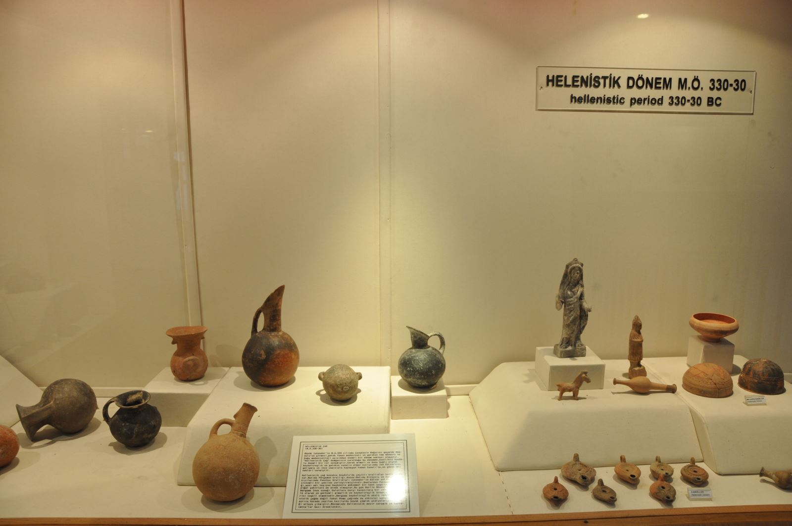

Prusias ad Hypium (Konuralp) Antik Kenti’nin zengin kültürel mirasını yaşatmak üzere kurulan Düzce Konuralp Müzesi, 2003 yılında ziyarete açılmıştır. Üç teşhir salonu, bir laboratuvar, iki depo, bir konferans salonu ve idari bölümlerden oluşur. Müzede bin 848 arkeolojik, 491 etnografik ve 3 bin 898 sikke olmak üzere toplam 6 bin 237 eser bulunmaktadır. Müzenin arkeoloji salonunda, Tunç Çağı’ndan (MÖ.3000-2000) Doğu Roma’ya (MS.395-1453) kadar çeşitli dönemlere ait eserler, pişmiş toprak ve mermer heykelcikler, metal eserler, takılar, cam kaplar ve mezar hediyeleri olan bölümler kronolojik olarak sergilenmektedir.
Konuralp Antik Kenti’nde bulunan birçok heykel çok önceden il dışına götürülmüş ve gittiği müzelerde sergilenmektedir. Bunlardan en önemlisi mülajı arkeoloji salonunda sergilenen aslı İstanbul Arkeoloji Müzesi’nde bulunan Tykhe Heykeli'dir. Orijinali MÖ. IV. yüzyıla ait olan bir eserin Roma Dönemi’nde MS II. yüzyılda yapılmış bir kopyasıdır. Zengin bir süslemeye sahip kader, şans ve başarı tanrıçası Tykhe’nin başının üzerinde zeytin yapraklarıyla süslü şehir surunu temsil eden bir taç vardır. Sol kolunda çeşitli meyvelerle dolu bir bereket boynuzu ile zenginliğin simgesi olan Plutos isminde bir çocuk taşımaktadır. Tykhe Okeanos’un kızlarından biridir. Kader, şans, başarı tanrıçasıdır. Her kentin bir Tykhe’si vardır. Tykhe’ler kentlerin koruyucu tanrıçaları olup, başlarında şehir suru şeklinde bir taçla gösterilirler.
Taş Eserler Salonu'nda Orpheus Mozaiği dikkat çekmektedir. Orpheus konulu mozaik, Roma Dönemi bir taşınmaza ait zemin döşemesidir. Yaklaşık 45 metrekare olan mozaiğin tamamının konservasyonu yapılmış ve sergilenmektedir. Mozaiğin merkezinde Orpheus lirini çalar şeklinde, çevresinde ise mevsimler betimlenmiştir. Orpheus çaldığı müzikle ağaçları, kayaları harekete geçirdiği ve canavarları yatıştırdığına inanılan bir mitolojik kahramandır. Mozaiğin çevresinde aslan, kaplan, tavus kuşu gibi hayvan figürleri ve dört köşesinde, dört mevsim tasvirli kadın başı figürleri yer almaktadır. Salondaki diğer önemli eser ise Tanrı Janus Heykeli'dir. Bir yüzü sağa, bir yüzü sola bakan iki yüzlü Roma Tanrısı diğer taş eserler gibi bu salonda sergilenmektedir. Bu Tanrının resmine Roma paralarında rastlanır. Janus’a ait olan yüzlerden biri kentten içeri girenlere, diğeri ise kentten çıkanlara bakar. Böylece kentin güvenlik içinde yaşamını sürdürdüğüne inanılırdı.
Geleneksel kültüre ait eserlerin sergilendiği etnografya salonunda, el işlemeleri, yöresel kıyafetler, süs eşyaları, mutfak kapları, aydınlatma gereçleri, tartı aletleri, kişisel eşyalar, kılıçlar, tüfekler vb. sergilenmektedir. Müze bahçesinde ise Konuralp (Prusias ad Hypium) Antik Kenti'nden çıkan büyük mimari parçalar, sütunlar, bomoslar (adak yazıtları), ostothekler (ölü küllerinin konduğu küçük taş lahitler), şehir yasası yazıtları, pythoslar (büyük depolama küpleri), mezar stelleri (mezar taşları), çeşme parçaları, islami mezar taşları vb. sergilenmektedir.
Konuralp’in batısındaki nekropolde 1937 yılında bulunan MS.1'inci yüzyıla ait Lahit mezar dikkat çeker. Lahitin uzun yüzünde kabartma olarak öküz başlarının taşıdığı çelenkler işlenmiştir. Bunların ortasında yazıtsız bir tabulaansata görülür. Lahitin alt kısmında çeşitli hayvan resimleri resmedilmiştir.